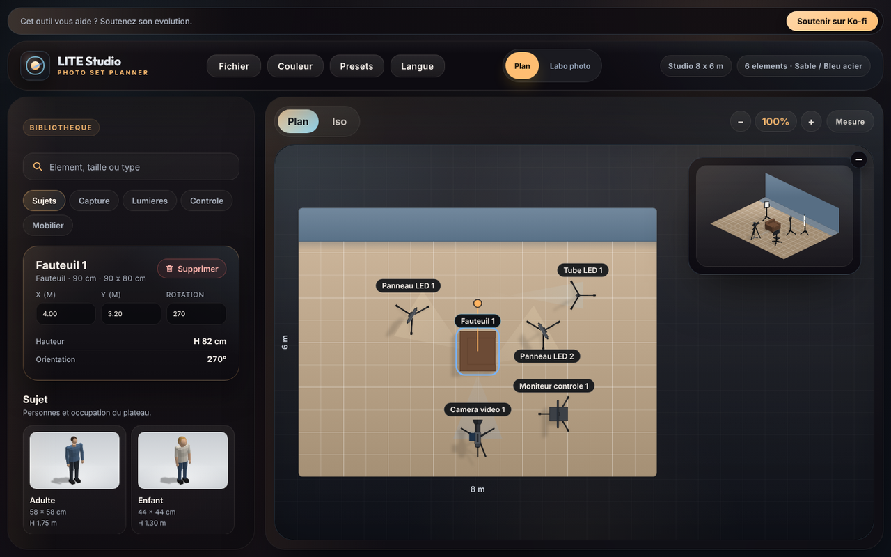

Lighting diagram
Cómo preparar un lighting diagram de entrevista claro para un rodaje rápido en estudio.
En una entrevista, el esquema debe mostrar tanto la luz como la logística. La posición de la cámara, la silla, los paneles LED, el monitor y los pasos del equipo importan tanto como la calidad del key light.
Cámara + sujetoEl plano hace visible de inmediato el eje principal y la distancia de toma.
Base de 2 puntos LEDUna base eficaz para una entrevista de estudio limpia y rápida de montar.
SeparaciónAñade fácilmente un tubo o un panel para recorte y profundidad.
Flujo del equipoEl set resulta más fácil de explicar y reproducir.
